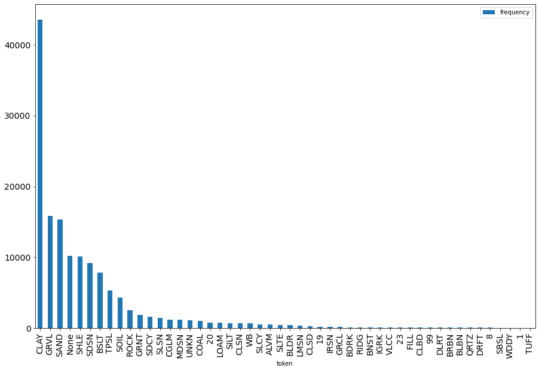
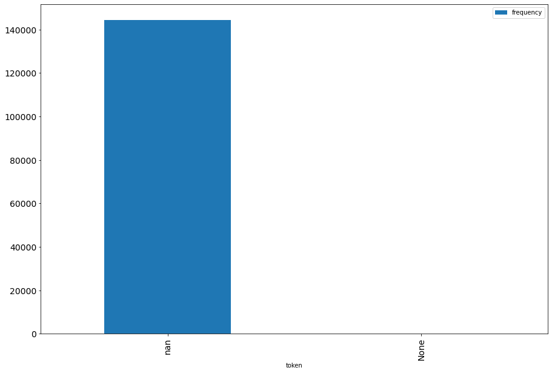

import pandas as pd
from pathlib import PathAbout
This is (perhaps) the start of a series of posts on using natural language processing for lithology classification. I hope to explore multi-label classification in subsequent posts.

Background
I’ve been attending virtually the latest Deep Learning course run by Jeremy Howard (See the fast.ai forum for pointers to past courses). Part of the experience can be to find “homeworks”. I traditionally work with point time series data, and it would have been a Pavlov reflex for me to get a use case with this type of data.
However in one of the lessons Jeremy used Hugging Face Transformers applied to the Kaggle competition U.S. Patent Phrase to Phrase Matching. At some point he made a comment about how much NLP progressed over the recent years, and how much potential value creation there was in this.
I do not follow closely NLP research, and am not knowledgeable enough to agree or not, but got an inkling of the potential value a few years back when working on a python package for exploratory lithology analysis, for groundwater characterisation. Lithology is “the study of the general physical characteristics of rocks”. Drilling core soil samples is not cheap; existing records are valuable.
Sections of a core sample drill can be described with sentences such as:
- topsoil
- shale, slippery back, green seams
- sandstone alluvium water bearing
- gravel red very clayey water supply
- sandstone, red/pale brown, fine-coarse, white clay bands, brownish yellow bands, pebbles (16.9-16.98m)
- fill; orange-brown, dry, loose, pebbles to 2.5cm, heterogeneous
- clay; light brown, strongly cohesive, contains silicate & carbonate clasts to coarse sand size, no clay smell.
You would have an inkling that the prose of the writer (the “driller”) can vary in style and detail. One typical use case is to determine the primary and (optionally) secondary lithologies of a record, as it strongly influences how fast water can flow underground. “gravel red very clayey” is on the easier side of the spectrum of difficulty: “gravel” as a primary lithology and “clay” as a secondary lithology (assuming these are valid classes for the context). It can get much trickier to classify of course, and certainly expensive if done very manually. Automating this classification process opens the possibility of an iterative process towards a sound lithology classification fit for purpose.
I co-authored a conference presentation “Comparing regular expression and deep learning methods for the classification of descriptive lithology” (Page 161 of the MODSIM 2019 book of abstracts if you are curious). With all the caveats of a study made on very limited resources, I was surprised by how well NLP performed overall to train and test on a human-labeled dataset.
I am not working on this domain during paid hours these days, but feel like revisiting this for a bit over the course.
Getting acquainted with data
Arbitrarily, I downloaded data for the Namoi catchment from the Australian Groundwater Explorer. While I am not totally new to the domain, I genuinely do need to explore this data from scratch. This will probably be at least the rest of this post.
fn = Path('~').expanduser() / "data/ela/shp_namoi_river/NGIS_LithologyLog.csv"The types of a few columns lead to warnings: let’s force them to ‘str’ here. I do not anticipate using the depth records for now.
litho_logs = pd.read_csv(fn, dtype={'FromDepth': str, 'ToDepth': str, 'MajorLithCode': str, 'MinorLithCode': str})So how does this data look like?
litho_logs.head()| OBJECTID | BoreID | HydroCode | RefElev | RefElevDesc | FromDepth | ToDepth | TopElev | BottomElev | MajorLithCode | MinorLithCode | Description | Source | LogType | OgcFidTemp | |
|---|---|---|---|---|---|---|---|---|---|---|---|---|---|---|---|
| 0 | 14 | 10045588 | GW003048.1.1 | None | UNK | 0.0 | 1.22 | None | None | SOIL | NaN | SOIL SANDY CLAY | UNK | 1 | 8666163 |
| 1 | 15 | 10045588 | GW003048.1.1 | None | UNK | 19.51 | 28.65 | None | None | BSLT | NaN | BASALT WATER BEARING | UNK | 1 | 8666164 |
| 2 | 28 | 10060509 | GW006968.1.1 | None | UNK | 0.0 | 3.66 | None | None | TPSL | NaN | TOPSOIL | UNK | 1 | 8666177 |
| 3 | 29 | 10060509 | GW006968.1.1 | None | UNK | 33.53 | 34.75 | None | None | GRVL | NaN | GRAVEL WATER BEARING | UNK | 1 | 8666178 |
| 4 | 30 | 10060509 | GW006968.1.1 | None | UNK | 48.77 | 51.82 | None | None | SHLE | NaN | SLIPPERY BACK | UNK | 1 | 8666179 |
A MajorLithoCode column appears to be populated, so this may be suitable for training a classifier. I have no idea (or forgot) how these lithology codes have been derived and what the corpus of labels is.
len(litho_logs)144518For the sake of conciseness I will point-blank reuse the text processing utilities in the ela package, without any explanation of the setup (ela comes with many dependencies from NLP to 3d vis that can be tricky to install).
from ela.textproc import token_freq, plot_freqMAJOR_CODE='MajorLithCode'
MINOR_CODE='MinorLithCode'
DESC='Description'Major (primary) lithology codes
litho_classes=litho_logs[MAJOR_CODE].values
df_most_common= token_freq(litho_classes, 50)plot_freq(df_most_common)<AxesSubplot:xlabel='token'>
This is a long-tailed distribution; quite a few labels. The limit to 4 characters labels suggest a form of controlled vocabulary. The numbers 20, 19, 23, 8, 1 look odd. “None” is an artefact though not misleading, quite a few records are such that no major lithology could be attributed.
Minor (secondary) lithology codes
litho_classes=litho_logs[MINOR_CODE].values
df_most_common= token_freq(litho_classes, 50)plot_freq(df_most_common)<AxesSubplot:xlabel='token'>
Well, no minor lithology codes, so this data set may not be a good start for multi-label classification. Still, I’ll persist with this data set, and reassess later on
Back to major lithology codes
What are the flavour of descriptions leading to the most frequent classes (CLAY, GRVL, etc.), as well as “None”
is_clay = litho_logs[MAJOR_CODE] == 'CLAY'clay_coded = litho_logs.loc[is_clay][DESC]import numpy as np
np.random.seed(123)
clay_coded.sample(n=50)144320 CLAY
117387 CLAY
18630 CLAY
35565 CLAY SOME SANDY
61997 CLAY
13533 CLAY SANDSTONE BANDS
117529 YELLOW CLAY
82290 CLAY
73280 CLAY GREY SANDY
106748 CLAY STONEY
26265 CLAY YELLOW
16456 CLAY
25032 CLAY
9911 CLAY
135852 CLAY, SANDY GRAVELLY, ORANGE BROWN, MEDIUM PLA...
30596 CLAY
140698 CLAY, SANDY FAT; RED, DRY-MOIST, MEDIUM CONSIS...
70267 CLAY
6534 CLAY YELLOW
69927 CLAY GRAVEL
76476 SANDY CLAY
7329 CLAY GRITTY
51685 CLAY; 40% BROWN, GRAVEL & SAND 60%, MOST 1-3MM
137385 CLAY
35816 CLAY
73972 CLAY
102333 CLAY SOME STONES
29218 CLAY
92266 RED CLAY
26151 CLAY SANDY
107456 CLAY GREY
52550 CLAY - LIGHT GREY, EXTREMELY SANDY (FINE TO CO...
24225 CLAY
120696 CLAY; LIGHT GREY, TRACE OF WHITE
9030 CLAY
14889 CLAY
25834 CLAY LIGHT BROWN GREY SILTY
44078 CLAY
114869 CLAY
109302 CLAY
38107 CLAY PATCHY
30801 CLAY
82362 CLAY/BROWN ORANGE
141490 CLAY; BROWN, PINK, SOME BLUE
23075 CLAY SANDY GRAVEL
42110 CLAY
50493 CLAY, WHITE SEAM, RED
90209 CLAY - DARK BROWN
104019 CLAY
12690 CLAY
Name: Description, dtype: objectNothing too surprising in this, very intuitive, though the tail suggests there may be a few outliers:
clay_coded.tail(10)144386 CLAY; LIGHT BROWN, SOME LIGHT GREY, SILTY
144388 CLAY; BROWN
144391 CLAY; LIGHT BROWN
144393 CLAY - BROWN
144394 CLAY - LIGHT BROWN, EXTREMELY SANDY (COARSE)
144398 CONGLOMERATE - WEATHERED BUT STILL HOLDS TOGET...
144401 CLAY; BROWN
144402 CLAY - GREY
144488 CLAY
144503 None
Name: Description, dtype: objectLooking at the “sand” code:
def sample_desc_for_code(major_code, n=50, seed=None):
is_code = litho_logs[MAJOR_CODE] == major_code
coded = litho_logs.loc[is_code][DESC]
if seed is not None:
np.random.seed(seed)
return coded.sample(n=50)sample_desc_for_code('SAND', seed=123)72256 SAND GRAVEL FINE WATER SUPPLY
109345 SAND CLAYEY GRAVEL
66816 SAND WATER SUPPLY
85097 SAND - 70% UP TO 2MM, GRAVEL 10% 2-5MM, CLAY 2...
137476 SAND; LIGHT BROWN, MEDIUM TO COARSE, FINE GRAV...
29946 SAND GRAVEL DIRTY
37012 COARSE SAND AND GRAVEL
135985 SAND
74402 SAND WHITE GREY WELL SORTED WATER SUPPLY
42422 SAND GRAVEL
41225 SAND CLAYEY GRAVEL
50700 SAND
33813 BROWN SAND (VERY FINE TO MEDIUM)
38452 SAND GRAVEL MEDIUM WATER SUPPLY
107707 SAND FINE-COARSE
51759 SAND; 60%, SILTY, FINE 10%, MEDIUM 20% & COARS...
102234 SAND GRAVEL WATER SUPPLY
74640 SAND GRAVEL WATER SUPPLY
13123 SAND GRAVEL WATER SUPPLY
23110 SAND
11373 SAND GRAVEL WATER SUPPLY
35508 SAND SILTY GRAVEL WATER SUPPLY
32744 SAND CLAYEY
67310 SAND CLAY
41813 SAND GRAVEL WATER SUPPLY
106457 SAND GRAVEL WATER SUPPLY
85591 SAND AND GRAVEL - CLAYEY AND SILTY
112156 SAND, WHITE (VERY VERY FINE)
111256 SAND/GRAVEL; FINE TO COARSE, BROWN
55808 SAND; POORLY GRADED, COARSE, SUBROUNDED, LIGHT...
91458 SAND, MEDIUM-COARSE; SLIGHTLY SILTY, WET, LOOS...
61608 SAND, GRAVEL & LIMESTONE
96382 SAND CLAYEY
37119 MEDIUM BROWN SAND & GRAVEL SOME LARGE GRAVEL
118473 SAND; 40% 1/20-1/2MM, 40% 1/2-1MM, 20% 1-3MM, ...
70703 SAND GRAVEL WATER SUPPLY
92920 BROWN SAND
80551 SAND, SILTY; AS ABOVE, TRACE CLAY, ORANGE, LOW...
25175 COARSE SAND & FINE GRAVEL WITH ANGULAR FRAGMEN...
38905 SAND FINE WATER BEARING
44248 SAND GRAVEL WATER SUPPLY
32261 SAND DRIFT
34510 SAND CLAYEY COARSE GRAVEL
77431 SAND AND GRAVEL FINE TO COARSE GREY
138362 SAND BROWN
103758 SAND GRAVEL STONES SOME CLAY BANDS
69238 SAND GRAVEL
143566 SAND & GRAVEL; SAND 50% (FINE 30%, MEDIUM 20%,...
135131 SAND
30361 SAND CLAYEY WELL SORTED
Name: Description, dtype: objectRather straighforward, consistent and and intuitive
Major lithology code “None”
This one is likely to be more curly and surprising. Let’s see
sample_desc_for_code('None', seed=123)131075 W.B. BROWN SHALE
127170 COARSE SAND AND GRAVEL
126145 BLUE CLAY
126889 GREY AND BROWN CLAY
132179 GREY BROWN CLAY
130033 BROWN SANDY CLAY
123436 GRAVEL
128794 CLAY
128242 SAND AND FINE GRAVEL
134156 None
129636 W.B. BASALT
122884 LIGHT ORANGE SILTY CLAY
124580 SHALES
128684 W.B. SHALE
131120 SAND AND GRAVEL
122690 RED RIDGE CLAY
132319 BLACK SOIL
128528 BLACK CLAY
123646 MUDSTONE
129757 SAND & CLAY
124353 SOFT BROWN CLAY
131921 CLAY
133208 BROWN CLAYS
132945 COARSE SAND
122956 SAND AND GRAVEL
123723 CALY AND GRAVEL
122102 TOP SOIL
126455 HARD SANDY BROWN & GREY CLAY WITH STONES
125637 SANDY BLUE AND GREY CLAY
131154 BROWN SANDY CLAY
129931 RIDGE CLAY
123557 RIDGE CLAY
124964 DARK BROWN CLAY
129391 GREY SHALE
132891 WATER 0.37 LS
132006 BROWN CLAY
134673 SEP
123692 BROWN CLAY
126034 REDDISH BROWN CLAY
129690 SOFT GINGER/BROWN CLAY & STONES
125560 FINE SANDY CLAYS
126238 SHALE & (WATER)
123009 SOIL
124236 SOIL
125814 BLUE SHALE
130474 RED & GREY CLAY
127005 BROWN CLAY
134212 BROWN AND
125640 SOIL
127355 SHALE
Name: Description, dtype: objectWell, it does not require a fully trained geologist to think there should be obvious primary lithology codes for many of these, so why is there “None” for these descriptions?
Not shown in the 50-odd sample above are descriptions which should indeed be unclassified (e.g. “no strata description”)
This is also an occasion to note the less obvious information and complications in descriptive logs, compared to earlier categories:
- CALY as a typo for CLAY
- Slang terms and acronyms, e.g. “W.B.” perhaps for “Weathered, broken”
- Quantitative and qualitative attributes such as SAND; 60%, SILTY, FINE 10%, MEDIUM 20% & COARSE, which may be valuable for some types of classification
sample_desc_for_code('SDSN', seed=123)9423 SANDSTONE SOFT
117911 SANDSTONE, SILTY; AS ABOVE, QUARTZ (+60%)
6613 SAND ROCK GREY
20345 SANDSTONE GREY HARD
106885 SANDSTONE
139088 SANDSTONE; DARK GREY, COARSE GRAINED, HARD
5101 SANDSTONE ROTTEN
26561 SANDSTONE YELLOW
137304 SANDSTONE; COARSE
56627 SANDSTONE; GREY, FINE-MEDIUM GRAINED, MOD WEAK...
98974 SANDSTONE WHITE WATER SUPPLY
87187 SANDSTONE
45141 SANDSTONE, VERY PALE BROWN, HIGH CLAY
70015 SANDSTONE YELLOW
29492 SANDSTONE WATER SUPPLY
92918 SANDSTONE
83555 SANDSTONE; LIGHT GREY, VERY FINE, STRONG
136401 SANDSTONE
48201 SANDSTONE
34060 SANDSTONE, YELLOW, MEDIUM GRAINED, HIGH CLAY M...
63752 SANDSTONE; WHITISH GREY, VERY FINE, ANGULAR, C...
51878 SANDSTONE, MEDIUM, WHITISH YELLOW
59346 SANDSTONE, SOFT
62968 SANDSTONE; OFF-WHITE GREY, VERY FINE, STRONG
140930 SANDSTONE, LIGHT GREY, SOME FRACTURES
6394 SAND ROCK
113546 SANDSTONE - HARD - LIGHT GREY
49539 SANDSTONE; RED GREY, FINE-MEDIUM GRAINED, FRIA...
60198 SANDSTONE; LIGHT GREY, FINE GRAINED
1366 SANDSTONE
35923 SANDSTONE WEATHERED COARSE WATER SUPPLY
141556 SANDSTONE, WHITE, IMPREGNATED WITH WATER WASHE...
10100 SANDSTONE WATER SUPPLY
89138 SANDSTONE; OFF-WHITE GREY, MEDIUM-COARSE GRAIN...
86046 QUARTZ SANDSTONE; MEDIUM GRAINED
76366 SANDSTONE, PALE BROWN, FINE-COARSE, LOW CLAY, ...
46179 SANDSTONE, LIGHTYELLOW/RED BROWN MOTTLED, FINE...
8613 SANDSTONE
4537 SANDSTONE YELLOW
60506 SANDSTONE
8917 SANDSTONE
1372 SANDSTONE WATER SUPPLY
82975 SANDSTONE; LIGHT GREY, FINE GRAINED, MOD STRON...
60166 SANDSTONE, VERY SOFT
31674 SANDSTONE SHALE
8397 SANDSTONE
113310 SANDSTONE; OFF-WHITE, FINE GRAINED, MOD STRONG
27980 SANDSTONE
79933 SANDSTONE WHITE BROKEN
33654 SANDSTONE YELLOW CLAYEY
Name: Description, dtype: objectNow, what’s with the weird numbers as lithology codes?
sample_desc_for_code('20', seed=123)130369 SANDY CLAY; BROWN (COARSE)
122444 CLAY SANDY
127761 CLAY SANDY
125771 SANDY CLAY
127783 CLAY SANDY
133014 SANDY CLAY AND CLAYEY SAND AND GRAVEL
124007 BROWN & GREY SANDY CLAY
123445 CLAY LT BROWN GREY SANDY, MED-COARSE BROWN BANDS
122180 CLAY SANDY
127440 SANDY CLAY
131498 SANDY CLAY
127935 CLAY RED SANDY
129304 SANDY CLAY
130614 SANDY SHALE
125543 SANDY CLAY
125149 SANDY CLAY
124971 SANDY CLAY/GREY BROWN
123939 SANDY CLAY, BROWN
122392 CLAY SANDY
123999 BROWN & GREY SANDY CLAY
129203 SANDY LOAM
127933 CLAY RED SANDY
134474 SANDY CLAYEY MED. BROWN
126071 SANDY CLAY
127927 CLAY SANDY
123587 CLAY SANDY
126559 SANDY CLAY
127928 CLAY GREY SANDY
124643 SANDY CALY/BROWN
122555 CLAY SANDY
132628 SANDY CLAY
129853 SANDY CLAY
130187 SANDY CLAY
129057 SANDY CLAY
133300 SANDY CLAY
122535 CLAY SANDY
122732 CLAY SANDY
127977 CLAY YELLOW SANDY
126568 SANDY CLAY
122339 CLAY SANDY
128386 SANDY CLAY, BROWN
128198 SANDY CLAY, RIDGE
125530 SANDY CLAY
126798 SANDY CLAY
122452 CLAY SANDY
123237 SANDY BROWN CLAYS
126510 SANDY CLAY; 40% LIGHT GREY, EXTREMELY SANDY (C...
132331 SANDY GRAVEL
131807 SANDY CLAY
132895 SANDY CLAY
Name: Description, dtype: objectInteresting. There is a clear pattern. I know from my prior exposure that “Clayey sands” and “sandy clays” are not that uncommon (and gradations of mixes of sand and clay matter a great deal to estimate hydraulic conductivity).
Next
This was the initial EDA. Next I’ll probably train a classifier on the major lithology code (or a subset thereof). I am keen to explore multi-label classification, but will have to decide whether to populate the secondary lithology code using regexp classification, or switch to a fully labelled dataset at some point.
This first post illustrated the need to have a look at data. This data was already collated and curated, and I have no doubt many people went through a lot of work to get there. But this may not be a fully labelled dataset amenable to be used for training a classifier. At least, not without further data preparation.